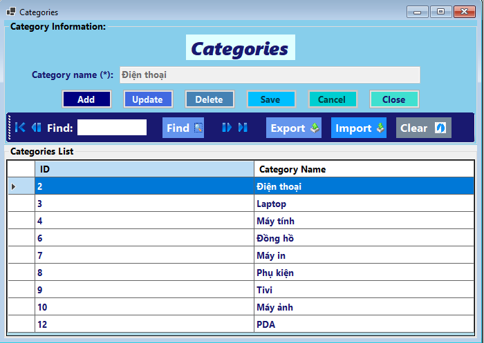

This guide explains how to manage product categories within the **HK.Huang Sales Management Software**. Categories help organize your products for easier management and sales.
Overview of the Categories Screen
The Categories management screen (frmCategories) allows you to view, add, edit, delete, import, and export product categories. The main components are:
- Category List (Data Grid View): Displays all existing categories with their ID and Name.
- Category Details Panel: Shows the name of the currently selected category for editing or new entry.
- Action Buttons: Buttons for various operations like Add, Edit, Delete, Save, Cancel, Import, Export.
- Navigation and Search Bar: Tools to navigate through the list and find specific categories.

Image: The main interface for managing product categories.
Viewing and Navigating Categories
When you open the Categories screen (Categories_Load), the system automatically loads all available product categories into the data grid view (dataGridView).
1. Navigating Through Records
Use the navigation buttons on the toolbar to move through the list of categories:
- First (btnBegin): Moves to the first record.
- Previous (btnPrevious): Moves to the previous record.
- Next (btnNext): Moves to the next record.
- Last (btnEnd): Moves to the last record.
The details of the currently selected category will be displayed in the "Category Name" field (txtCategoryName).
2. Searching for Categories
To find a specific category:
- Enter keywords into the search box (txtFind).
- As you type, the list will automatically filter to show categories whose names contain the entered keyword (triggered by txtFind_TextChanged calling btnFind_Click).
- If no matching categories are found, a "No matching category found." message will appear (in lblMessage).
- Click the Clear button (btnClear_Click) to clear the search filter and display all categories again.
Adding a New Category
To add a new product category:
- Click the Add button (btnAdd_Click). The "Category Name" field will become active and clear for new input, and the "Save" and "Cancel" buttons will be enabled.
- Type the name of the new category into the "Category Name" field (txtCategoryName).
- Click the Save button (btnSave_Click) to create the new category.
- A "Operation successful!" message will confirm the addition. The screen will then refresh, and the new category will appear in the list.
Note: Ensure the category name is unique and descriptive.
Editing an Existing Category
To modify an existing product category:
- Select the category you wish to edit from the data grid view (dataGridView) by clicking on its row. The category's name will appear in the "Category Name" field.
- Click the Edit button (btnEdit_Click). The "Category Name" field will become editable, and the "Save" and "Cancel" buttons will be enabled.
- Modify the category name as needed in the txtCategoryName field.
- Click the Save button (btnSave_Click) to apply your changes.
- A "Operation successful!" message will confirm the update. The screen will then refresh to reflect the changes.
Deleting a Category
To remove a product category:
- Select the category you wish to delete from the data grid view (dataGridView).
- Click the Delete button (btnDelete_Click).
- A confirmation message "Are you sure you want to delete this category?" will appear. Click Yes to proceed or No to cancel.
- If confirmed, a "Category deleted successfully!" message will appear, and the category will be removed from the list.
Warning:
Deleting a category that is linked to existing products may cause data integrity issues or errors. Ensure no products are associated with the category before deleting it.
Importing Categories from Excel
You can import multiple categories from an Excel file:
- Click the Import button (btnImport_Click). An "Open File" dialog will appear.
- Navigate to and select your Excel file (e.g., .xls or .xlsx).
- The system will read the data from the first worksheet. Ensure your Excel file has a column named "CategoryName" (case-sensitive as per code's r["CategoryName"].ToString()).
- After the import process, a message indicating how many rows were successfully imported will appear.
Excel File Format:
The Excel file should have a header row, and at least one column explicitly named "CategoryName". Only data from this column will be imported as category names.
Exporting Categories to Excel
You can export the current list of categories to an Excel file:
- Click the Export button (btnExport_Click). A "Save File" dialog will appear.
- Choose a location and enter a file name for your Excel file (e.g., Categories_YYYY_MM_DD.xlsx).
- Click Save.
- A "Exported data to Excel file successfully." message will confirm the export.
- The Excel file will contain "ID" and "TenLoai" (CategoryName) columns.
Cancelling Actions and Closing
- Cancel Button (btnCancel_Click): If you are in "Add" or "Edit" mode, clicking "Cancel" will discard any unsaved changes and return the screen to its initial state.
- Close Button (btnClose_Click): Closes the Categories management screen and returns you to the main application.